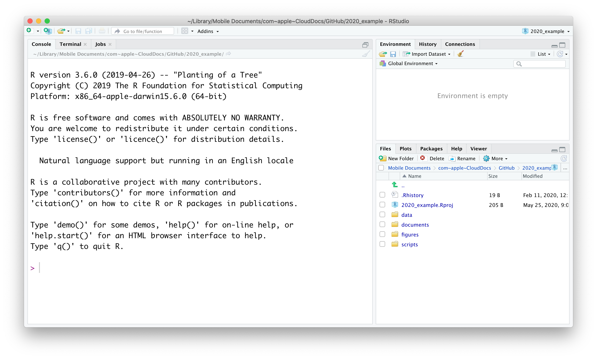
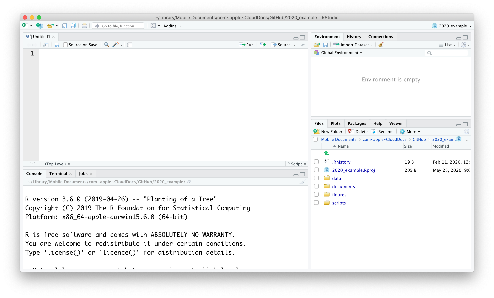
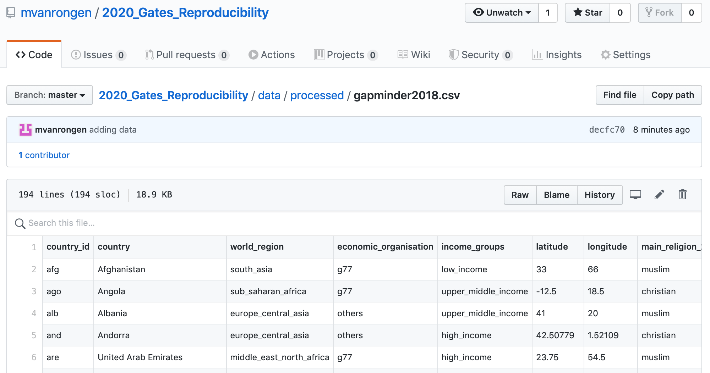
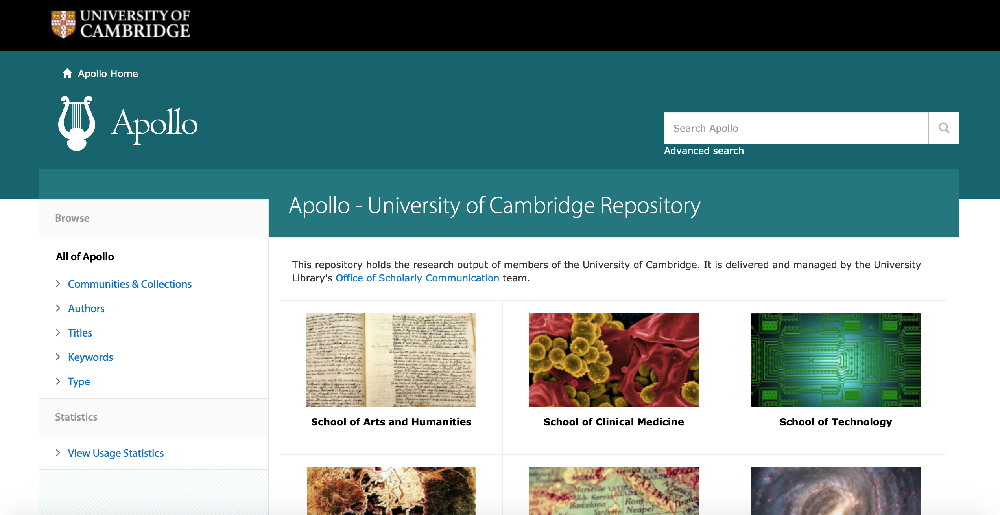

Data organisation and availability
Martin van Rongen
Getting started
R

R is a statistical programming language widely used in the data science field.
R provides a record of your analysis
R uses scripts to record which steps you take during your analysis. Although this might initially take longer to learn than pointing and clicking your way through some other software, it makes it much easier to go back to your analysis in the future and re-do or adjust it, if needed. An added benefit is that it enables you to make comments as to why you’ve done certain steps in your analysis.
Reproducibility
It’s the latest buzz-word in science and for good reason! Using R to record every step of your analysis and linking this to the original raw data that you used to do the analysis allows people to reproduce your work. This may very well be your future self!
This kind of record also enables other people to decide for themselves if the choices you’ve made in the analysis are reasonable and allows them (and yourself) to spot any mistakes.
For those of you who work in academia there is an added advantage. An increasing number of journals and funding bodies now require you to deposit your raw data and the analysis that led to your conclusions. Knowing how to use R can really be a benefit here.
Even news agencies, such as the BBC Shared Data Unit now make the underlying analysis of many of their news items available, many of which are performed in R. With the onset of “fake news”, more and more people are expecting transparency!
RStudio
When opening RStudio you’re greeted with the following screen (note that this may look different on your computer, depending on your operating system and colour scheme):

There are three panels visible at this stage, clock-wise:
- Console. The console can be used to execute code in directly.
- Environment. This displays all the data that is loaded into R’s memory.
- Files/Plots/Packages/Help/Viewer. These tabs show the Files in your directory, any Plots you have created, Packages that are installed, a Help function and a Viewer pane that can be used for local web content.
A bit more about the console. Although it can be useful to execute code directly (in the case of one-off actions, such as the installation of packages) you will want to save your code most of the time so you can share it or refer back to it later. In that case it’s good to start a script to write the code in.
To start a new script go to File -> New File -> R Script. Your new screen will look something like this, with a new panel appearing in the top right corner:

Data organisation
Working directory
You might have noticed that the bottom right panel contains five different tabs, one of which is called Files. In our example it shows the current working directory. The concept of a working directory is very important one. When we’re working on a project, it is good practice to keep all the data, scripts, images and any other files contained in a single folder. This single folder we call the working directory and it allows us to use relative paths in scripts as opposed to absolute paths.
Relative path: data/raw/gapminder.csv
Absolute path: C:/Users/Admin/Documents/R/Projects/2020_example/data/raw/gapminder.csv
The beauty of using relative paths is that you can move the working directory folder to any location you like and all the references and links in the scripts will continue to work. Hard coding absolute paths is always a bad idea because it makes it much harder to share your code because it is all linked to a specific directory on your computer.
Directory structure
Apart from using a working directory it also pays off to think about how to organise your files within it. In this example the working directory is called 2020_example and it contains several other directories to organise our files:

- the
datafolder contains arawandprocessedsub-folder. This is often a good idea, because you want to make sure you never overwrite your original, raw data. Any analyses can always be repeated (save your script!) and the output of them can go into theprocesseddata folder. - the
documentsfolder contains documents that are relevant to the project. - the
figuresfolder can contain sub-folders to separate quick exploratory plots and publication-quaility figures. - the
notebooksfolder can contain your R Markdown files in which you explore your data in detail. - a
scriptsfolder contains all the scripts used in the final analyses. It often helps to order them and name them consistently, such as01-read_data.R,02-clean_data.R,03-exploratory_analysis.Retc. It’ll save you a lot of headache when trying to find things back in the future!
The working directory also contains a file named 2020_example.Rproj. This is a file that is created by RStudio and when you open that it automatically opens RStudio in a new session and sets the working directory to where this Rproj file is located. Useful! To create your own R project, go to File -> New Project.
Note: You can create new directories by clicking on the
New Folderbutton or by creating them directly in your file browser.It is good practice to avoid any spaces in your directory names because these names can create issues when used in code. Instead, you can use the underscore.
R is also case-sensitive, so be consistent in your use of uppercase and lowercase. I personally use lowercase exclusively because it’s one less thing to think about!
Data availability
Making your data reproducible also involves thinking about where to store your data. We will look more closely into GitHub later, but for now it’s suffice to say that you can use GitHub to easily share your analyses, which can also include the data itself.
Below is an example of a data set that is available on the GitHub repository for this course.

This works well if your data sets are not too large, but depending on your research you might soon find it becomes limiting. There are online repositories for all kinds of data, such as GenBank for genetic sequences, ENA for various sequencing information etc.
These repositories keep your data available and provide a fixed, unique URL to your data that you can use within your scripts.
When publishing your research journals will usually require a link to all the data. If you’re a researcher at Cambridge University you can use Apollo. This is the University’s online repository and takes all kind of types of data, enabling you to keep all your data in one place.

There are plenty more repositories to choose from and the main things to keep in mind are accessibility and stability. Can people access your data freely and are the data likely be in the same place in 10 years time?
Data exploration workflow
Some might have completed the Introduction to R for Biologists course at the University. If so, you will have come across the concept of data exploration workflow.
When you are working on a project that requires data analysis, you will normally need to perform the following steps:

More information on this workflow can be found in the R for Data Science book. Let’s briefly go over each step:
- The first step in working with data is to first import your data into R. This connects the external file/database to your project in R.
- Cleaning or tidying the data will follow, which involves making sure that the data is consistent and that each row in the dataset is an observation and each column is a variable.
e.g. In thegapminderdata set thecountrycolumn specifies the country, using a capital letter at the start. A common problem in data sets is inconsistent capitalisation. For example, here Austria would be different to austria, since R is case-sensitive. During the tidying stage it is important to make the dataset consistent and much as possible so that you can focus on the questions you are trying to solve in your analysis.
- Once the dataset is tidy, we move to the transformation stage. To be able to transform your data you need to plan in advance what analyses you would like to perform on the dataset and what plots you would like to create. In this way, you are able to plan ahead what variables/columns you will be using from the dataset, what additional variables you will need to create and what variables you will not be using so that you can keep only the columns in the dataset that are relevant for your analyses. By the end of the transformation process you will have a dataset that is focused for your analyses and you can move on to the main exploratory mechanisms of this workflow which are visualisation and modelling. These two stages complement each other and when exploring your data you normally repeat these two stages several times.
- Visualising data is a powerful way to explore your data. Furthermore it helps you understand if there is any pattern in the data.
- Modelling the data involves applying statistics or other mathematical or computational models on your data to explore if there are correlations or patterns in the dataset to help you answer the scientific question you are trying to solve.
- The last step in the data exploration workflow is to communicate your results. This is very important as you will need to be able to communicate your results to others to have a successful project.
All these stages in the data exploration workflow can be achieved by programming in R. In this course we will focus on the communicate aspect of the workflow. And for that we need to turn to RMarkdown.